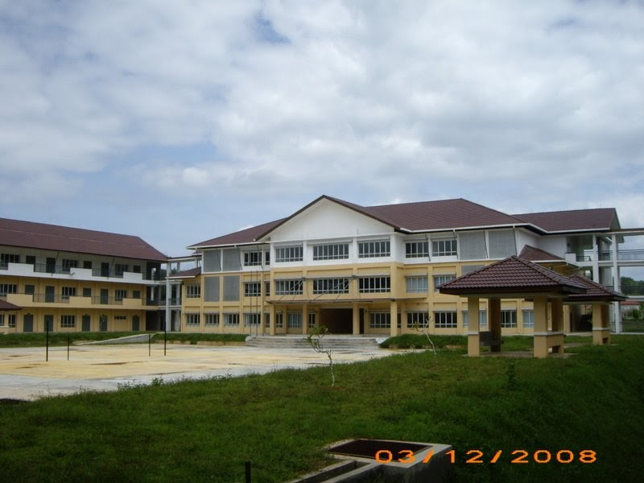

MY PRIMARY SCHOOL
SK MACHANG 2
I started school at this school in 2009 which is this is my first school at kelantan after I move from Pahang. I feel a little bit hard to feel comfortable with this school at first because I still cannot understand how to communicate with Kelantan people. But, after a few months, I already feel comfort to study at this scholl. Lastly, I finished study in 2014 and I get 4A 1B in UPSR.
MY SECONDARY SCHOOL
SMK BANDAR MACHANG
After I finished my primary school, I continue my study to secondary school which is Sekolah Menengah Kebangsaan Bandar Machang. Both school is near for each other so it easy for me. I studied in this school for 5 year and finished it in 2019. For my SPM result, I get 6A and 2B.
MY UNIVERSITY

UiTM Machang
Start from 2020 until now, I continued my study at UiTM Machang in Diploma Information Management for 5 sem. And, this is my last sem for this course and I hope that everything will be well for me .